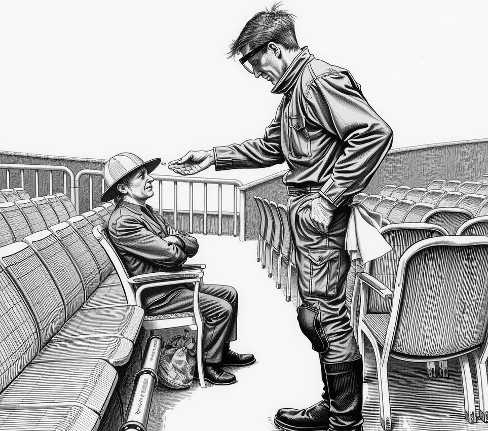

Aether-Seven Platform . 5 August 2283

A six-month study of cloud-deck theatre troupes on Aether-Seven Platform confirmed Friday that heavy methane air expands singers' lungs until they burst on high notes.
Safety inspectors have formally categorised the explosions as an acceptable performance variance, provided front-row patrons wear disposable plastic visors.
Dr. Aris Thorne, who led the research team, explained the process during a press briefing. "Methane gathers inside the chest during soft spoken passages," Thorne said. "When a singer strikes a sustained high note, the air inside the lungs expands four times over."
The chest gives way.
The board ruled that the phenomenon poses no threat to public health, provided theatre staff hand out protective eye shields at the door.
"So long as patrons wipe their visors between acts, audience risk is zero," Thorne said. "The sudden loss of a singer is strictly an internal staff matter."
The study revealed that no cloud-deck troupes intend to transpose their musical scores to lower keys. Instead, directors have begun moving high notes to the final scene of the evening so stage hands only need to scrub the platform once per show.
Understudies wait with mops.
Front-row ticket sales have doubled since the report was published. Audition notices for next season now list next of kin as a mandatory field.